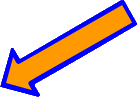

Comment programmer une machine
pour trier les morceaux de robot?
Voici à quoi ressemble ton espace de travail pour cette activité.
Tu pourras consulter les instructions de Robotino en cliquant ici.
Tu peux regarder les pièces qu’il faut trier en cliquant ici.
Ici, c’est la machine qui va trier les pièces. Il faut la programmer pour que les pièces se rendent dans le bon seau.
